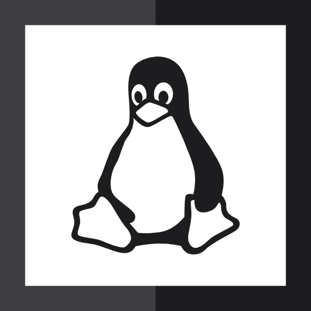

HANDS-ON
Cloud & AWS
Core cloud infrastructure and networking services.

PyaeSone . PortfolioHELLO, I'M
I build practical skills in cloud infrastructure, Linux administration and networking — one hands-on project at a time.
# current focus
const engineer = {
cloud : 'AWS' ,
systems : [ 'Linux' , 'Docker' ],
networking : 'TCP/IP' ,
mindset : 'always learning'
};
Ready to build ▋
I'm an IT development student based in Osaka, Japan, working toward a career in cloud and infrastructure engineering.
My learning is centered on understanding how systems work in the real world: configuring Linux environments, designing AWS networks, containerizing applications and documenting each experiment. I enjoy turning concepts into repeatable labs and projects.
I'm currently strengthening my foundations and looking for opportunities to learn from experienced engineers while contributing with curiosity, consistency and a hands-on mindset.
I enjoy working in Linux environments—not just following commands, but understanding what happens behind the scenes. Networking especially interests me because every connection has a story to trace. When something breaks, I like investigating logs, testing hypotheses, and finding the root cause. For me, troubleshooting is more than fixing errors; it is a chance to learn how systems really work.
My approach: investigate, understand, improve.A practical snapshot of the technologies I have studied or used in labs and projects. I keep learning status transparent.
Core cloud infrastructure and networking services.
Administration, permissions, services and command-line automation.
Building a foundation in network design and troubleshooting.
Packaging applications and exploring delivery workflows.
Web application development and backend fundamentals.
Planned areas for deeper infrastructure engineering practice.
Skill labels describe current learning and project experience — they are not professional proficiency ratings.
A monitoring dashboard designed to check website availability, record status and visualize uptime. Built as a portfolio project with a containerized backend and reverse proxy setup.
Explore GitHub profile$ chmod 700 secure-folder
$ systemctl status cron
$ journalctl -u nginx
✓ lab checks documented
Practical exercises covering filesystem navigation, permissions, user access, processes and service troubleshooting.
Find repositoryA growing collection of shell scripting exercises: variables, quoting, command substitution, executable scripts and Linux automation basics.
Find repositoryHands-on learning with VPC design, public/private subnets, peering, Transit Gateway, site-to-site VPN, IAM and load balancing.
Find repositoryBrowse source code, lab notes and project progress.
Project cards are based on work and labs described in my portfolio notes. Repository-specific links can be added once each project repository is published or confirmed.
A living roadmap focused on fundamentals, practical projects and production-minded skills.
Filesystem, permissions, users and groups, processes, services, package management and Bash scripting.
TCP/IP, subnetting, DNS, routing, VPC, EC2, IAM, S3, load balancing and secure network design.
Deepen Docker and Compose skills, then learn Terraform to create repeatable infrastructure.
Automate testing and deployment, monitor infrastructure health, and build useful alerts and dashboards.
Explore container orchestration and complete an end-to-end cloud deployment with documentation.
Passed · December 2024
Studying Linux and networking fundamentals; building AWS hands-on experience.
No AWS, LPIC or CCNA certification is claimed at this time.
I'm open to learning opportunities, internships and conversations about cloud infrastructure, Linux and DevOps.
jp0796737@gmail.com